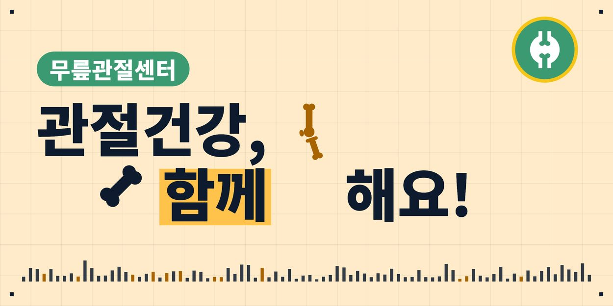
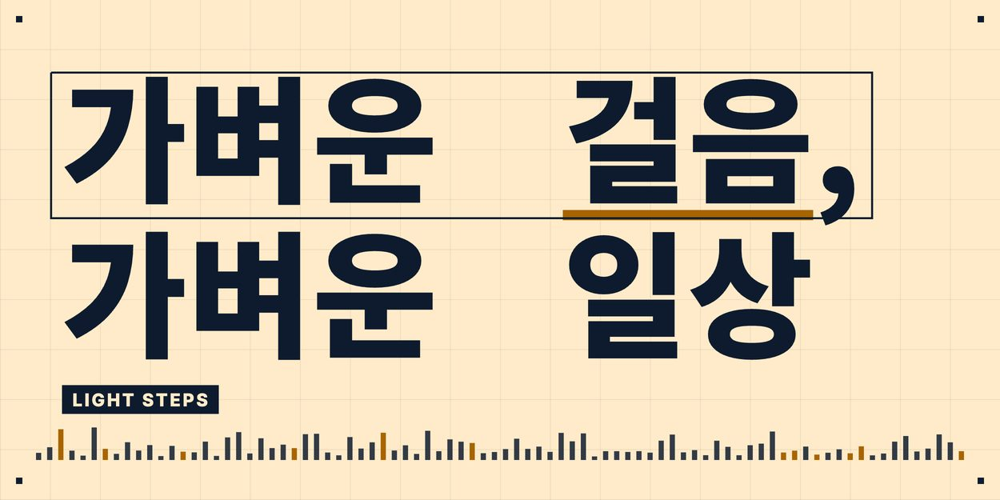
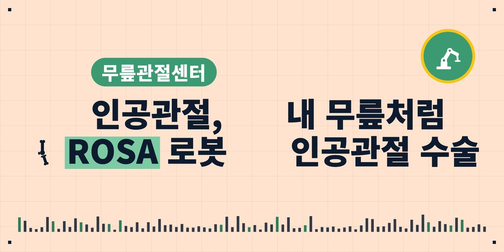
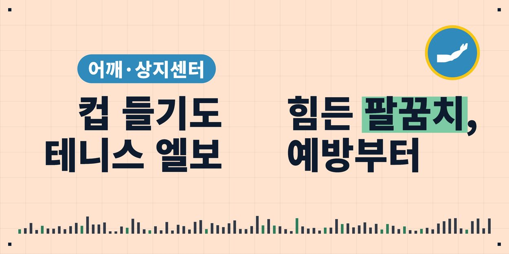
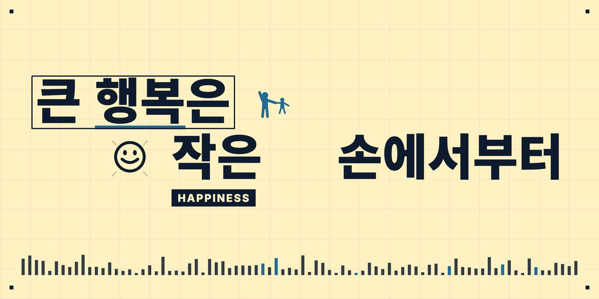
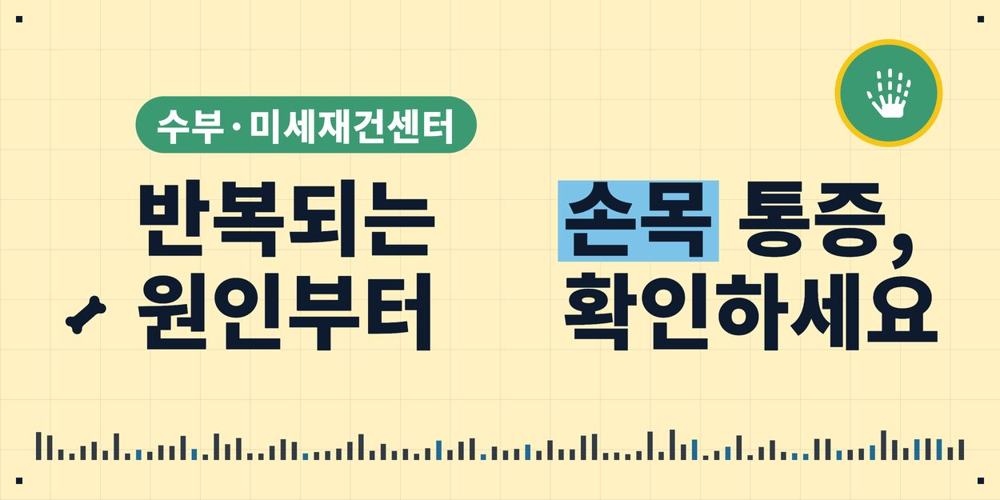
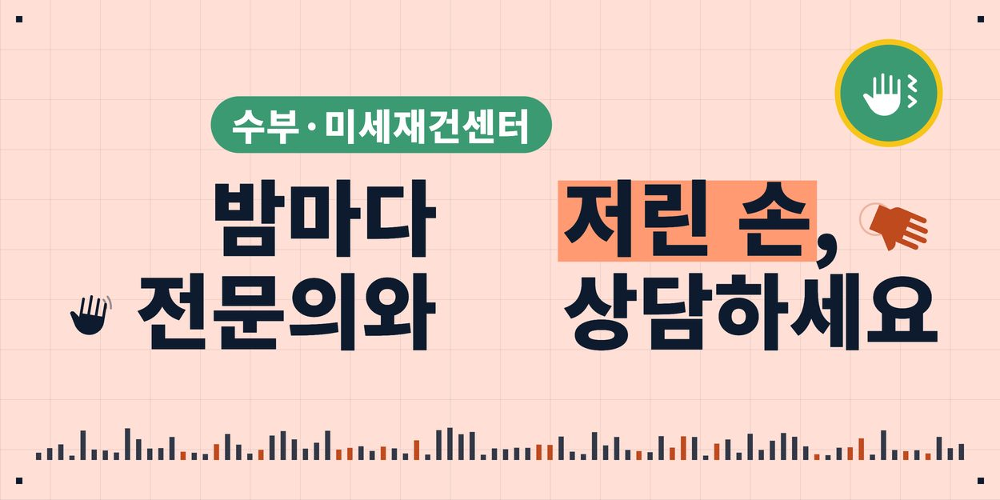
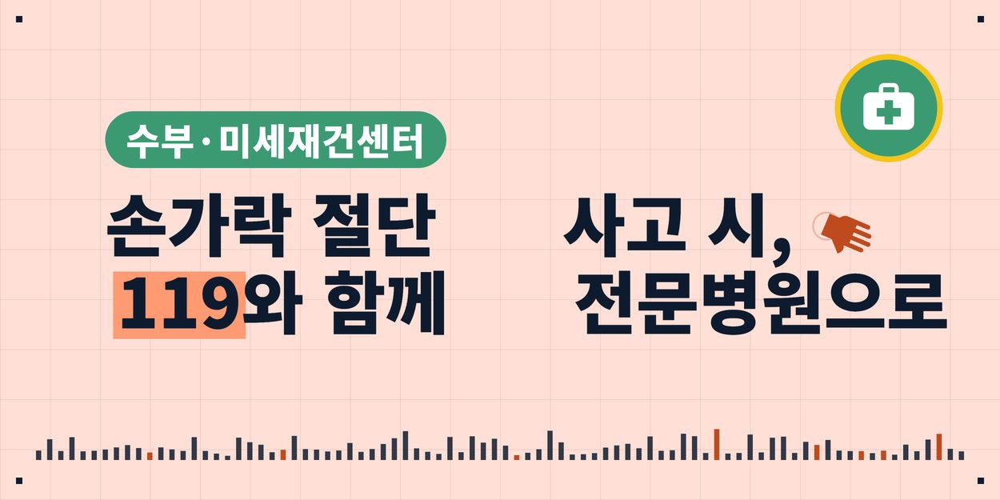
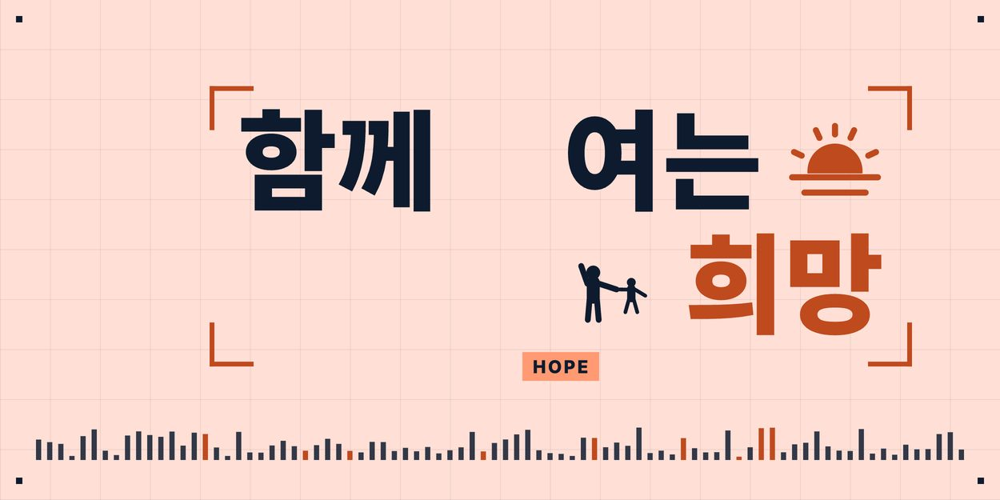
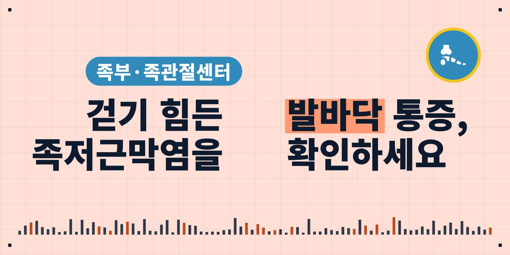

①서쪽 교차로 횡단보도
두 면이 거의 같은 폭으로 보이는 자리입니다. 입체 착시는 이 사진을 찍은 자리에서 두 면에 걸친 글줄과 로고가 반듯하게 보이도록 계산했습니다.
11.20 시안 · 11.13 최종안에서 슬로건 20칸만 바꿨습니다. 공익 슬로건 10개와 원장님 슬로건 10개를 한 칸씩 번갈아 넣고, 원장님 슬로건에는 진료과 이름표와 관절·의료기기 아이콘을 붙였습니다. 로고 화면·규격·납품 조건은 최종안과 같습니다.
현장 답사 사진 속 철골 위치로 카메라 자리를 계산해, LED를 실제 자리와 크기 그대로 사진에 입혔습니다. 같은 장면(로고 화면 1, 0:21 · 가로형으로 바뀌어 이름이 화면을 꽉 채우는 때)을 두 자리에서 본 모습입니다.
두 면이 거의 같은 폭으로 보이는 자리입니다. 입체 착시는 이 사진을 찍은 자리에서 두 면에 걸친 글줄과 로고가 반듯하게 보이도록 계산했습니다.
더 가깝고 더 올려다보는 자리라 화면이 크게 보입니다. 입체감은 조금 덜하지만 무너지지 않고 그대로 읽힙니다.
공사 중인 비계와 안전망은 사진에서 지웠고, LED 아래 받침 철골은 실제 구조물이라 그대로 두었습니다. 두 시점 모두 15분 전체를 합성한 영상을 함께 드립니다.
슬로건 12초가 끝나면 로고 화면 33초가 이어집니다. 이 45초 한 쌍이 20번 반복되고, 15분이 지나면 처음으로 돌아갑니다. 아래 막대는 실제보다 15배 빠르게 재생되며, 칸을 누르면 그 장면의 시작 시각과 프레임이 나옵니다. 슬로건은 홀수 칸이 공익, 짝수 칸이 원장님 슬로건이며, 막대 위 노란 줄이 원장님 슬로건입니다.
로고 화면 안 시각(0~33초)은 2D·3D 모두 같습니다. 칸마다 다른 것은 ‘등장’과 ‘사건’ 두 부분이고, 나머지 박자는 같아서 어느 칸을 잘라 쓰거나 바꿔 끼워도 이음매가 맞습니다.
| 칸 | 종류 | 시작 | 시작 프레임 | 길이 | 내용 |
|---|
로고의 뜻, 두 손이 한 사람을 감싸 안는다를 이야기로 풀었습니다. 홀수 칸은 2D 로고 이야기, 짝수 칸은 3D 로고 모션 다섯 가지가 두 바퀴 돕니다. 로고 화면에는 로고와 병원 이름만 나옵니다.
멀리서도 이름이 잘 보이도록 ‘나은필병원’을 1.5배로 키웠고, 로고 화면마다 9.6~15.6초에 심벌이 왼쪽으로 비키며 가로형(심벌 왼쪽 · 이름 오른쪽)으로 화면을 꽉 채운 뒤 다시 세로형으로 돌아옵니다. 15분 동안 20번입니다.
작은 점(사람)이 통통 들어오면 두 손이 빛 가닥으로 날아와 리본이 자라고, 꼭 안아 준 뒤 이름이 톡톡 나옵니다. 이름을 읽는 동안 가로형으로 화면을 채웠다가 돌아오고, 끝에는 건강해진 사람이 뛰어나가며 로고가 빛 알갱이로 풀려 따라갑니다. 사건 구간은 ‘꽃잎 다시 피기’와 ‘길 쪽으로 튀어나오기’를 번갈아 씁니다.
로고가 방 뒷벽을 두 번 들이받아 뚫고 나옵니다. 사건 구간에서 노란 고양이가 공을 치면 공이 벽과 천장에 튕겨 로고 가운데로 쏙 들어가고, 고양이는 깜짝 놀라 반대편으로 달아납니다.
로고가 왼쪽에서 바퀴처럼 구르며 날아와 480개 조각으로 흩어집니다. 조각이 화면 전체를 덮는 마름모 그물이 되어 길 쪽으로 두 번 불룩 출렁인 뒤, 다시 모여 로고가 됩니다.
로고가 천장을 깨고 떨어지며 앞으로 한 바퀴 구릅니다. 사건 구간에서 은색 줄무늬 고양이가 벽을 타고 달아나는 초록 빛 점을 쫓고, 빛 점은 마지막에 로고 가운데 점으로 들어갑니다.
벽을 뚫고 나온 로고가 길 쪽으로 성큼 나와 커지고, 가운데 점을 눈동자처럼 굴려 길을 둘러봅니다. 꾸벅 인사하고 손을 흔든 뒤 구멍으로 쏙 들어가면 벽이 다시 메워집니다.
로고에 금이 가며 점은 머리, 리본은 팔이 되어 민트·은색 로봇으로 일어섭니다. 손을 흔들고 빛줄기를 낸 뒤, 팔이 리본으로 감기며 다시 로고로 돌아옵니다.
11.20 요청에 따라 원장님이 주신 진료과 슬로건 10개와 기존 공익 슬로건 10개를 한 칸씩 번갈아 넣었습니다. 홀수 칸은 공익, 짝수 칸은 원장님 슬로건이라 15분 동안 두 종류가 고르게 나옵니다. 바탕과 속도는 11.13 의견대로 따뜻한 한 가지 색 위에 문장이 천천히 나타나고 사라지는 방식 그대로이고, 원장님 슬로건에만 진료과 이름표와 아이콘 배지가 더해집니다.
남긴 공익 슬로건 10개는 기존 20개 가운데 뜻이 겹치지 않는 것으로 골랐습니다. 문구는 병원 확인 후 확정하며, 의료광고 심의 결과로 바뀌는 문구는 수정 횟수에 넣지 않습니다.
원장님이 보내 주신 진료과 영상 11편을 길에서 한눈에 읽히는 두 줄로 줄였습니다(회전근개 두 편은 한 칸). 진료과 이름표가 먼저 나오고 문구가 공익 슬로건과 같은 차분한 방식으로 12초 동안 나타나며, 오른쪽 위에 내용에 맞는 아이콘 배지가 함께 나옵니다. 배지는 예전 시안의 관절 배지처럼 진료과 색 원에 금색 테, 흰 그림입니다.
| 칸 | 진료과 | 아이콘 | 화면 문구 | 원본 |
|---|---|---|---|---|
| 02 | 무릎관절센터 | 무릎 관절 | 관절건강, / 함께 해요! | PPT 8번 |
| 04 | 무릎관절센터 | 다리 | 무릎 아파도 걸어야 할까? / 내 무릎에 맞는 운동과 치료 | PPT 9번 |
| 06 | 무릎관절센터 | 수술 로봇 | 인공관절, 내 무릎처럼 / ROSA 로봇 인공관절 수술 | PPT 6번 |
| 08 | 어깨·상지센터 | 어깨 관절 | 밤마다 아픈 어깨, / 회전근개를 확인하세요 두 편 모두 회전근개 내용이라 한 칸으로 묶었습니다. | PPT 4·5번 |
| 10 | 어깨·상지센터 | 팔 | 컵 들기도 힘든 팔꿈치, / 테니스 엘보 예방부터 | PPT 3번 |
| 12 | 척추센터 | 척추 | 허리 디스크 수술, / 양방향 내시경으로 ‘안전하게’처럼 결과를 보장하는 듯한 표현은 심의에서 걸릴 수 있어 뺐습니다. | PPT 7번 |
| 14 | 수부·미세재건센터 | 손·손목 뼈 | 반복되는 손목 통증, / 원인부터 확인하세요 | PPT 1번 |
| 16 | 수부·미세재건센터 | 저린 손 | 밤마다 저린 손, / 전문의와 상담하세요 | PPT 2번 |
| 18 | 수부·미세재건센터 | 구급상자 | 손가락 절단 사고 시, / 119와 함께 전문병원으로 응급처치 순서 대신, 길에서 한눈에 읽히는 한 줄로 줄였습니다. | PPT 10번 |
| 20 | 족부·족관절센터 | 발 뼈 | 걷기 힘든 발바닥 통증, / 족저근막염을 확인하세요 ‘망가진다’처럼 겁을 주는 표현은 부드럽게 바꿨습니다. | PPT 11번 |
 01공익 · 바른 움직임, 나은 미래
01공익 · 바른 움직임, 나은 미래

02무릎관절센터 · 관절건강, 함께 해요!
03공익 · 가벼운 걸음, 가벼운 일상 04무릎관절센터 · 무릎 아파도 걸어야 할까? 내 무릎에 맞는 운동과 치료
04무릎관절센터 · 무릎 아파도 걸어야 할까? 내 무릎에 맞는 운동과 치료
 05공익 · 맞잡은 손, 함께 걷는 삶
05공익 · 맞잡은 손, 함께 걷는 삶

06무릎관절센터 · 인공관절, 내 무릎처럼 ROSA 로봇 인공관절 수술 07공익 · Feel Good, Feel Better! 오늘도 웃는 하루!
07공익 · Feel Good, Feel Better! 오늘도 웃는 하루!
 08어깨·상지센터 · 밤마다 아픈 어깨, 회전근개를 확인하세요
08어깨·상지센터 · 밤마다 아픈 어깨, 회전근개를 확인하세요
 09공익 · 웃음 가득한 내일
09공익 · 웃음 가득한 내일

10어깨·상지센터 · 컵 들기도 힘든 팔꿈치, 테니스 엘보 예방부터 11공익 · 움직임이 건강이다
11공익 · 움직임이 건강이다
 12척추센터 · 허리 디스크 수술, 양방향 내시경으로
12척추센터 · 허리 디스크 수술, 양방향 내시경으로

13공익 · 큰 행복은 작은 손에서부터
14수부·미세재건센터 · 반복되는 손목 통증, 원인부터 확인하세요 15공익 · 하루 만 보 걷기 실천
15공익 · 하루 만 보 걷기 실천

16수부·미세재건센터 · 밤마다 저린 손, 전문의와 상담하세요 17공익 · 바른자세 평생건강
17공익 · 바른자세 평생건강

18수부·미세재건센터 · 손가락 절단 사고 시, 119와 함께 전문병원으로
19공익 · 함께 여는 희망
20족부·족관절센터 · 걷기 힘든 발바닥 통증, 족저근막염을 확인하세요위 네 영상은 서쪽 교차로 횡단보도 현장 사진에 입체 방 영상을 입힌 미리보기입니다. 입체 글자는 이 사진을 찍은 자리(약 111m)에서 두 면에 걸친 글줄이 한 판으로 반듯하게 보이도록 계산했습니다. 20칸 그림은 입체로 접기 전 펼친 화면입니다. 원래 문구와 다듬은 이유는 슬로건 50:50 시안 페이지에 칸마다 적어 두었습니다. 원장님 슬로건은 의료 관련 문구라 의료광고 사전심의가 필요한지 병원에서 확인 부탁드립니다.
첫 제안(5분, 슬로건 중심) 이후 대표원장님과 병원에서 주신 의견을 차례로 담아 지금의 15분 구성이 되었습니다.
| 날짜 | 주신 의견 | 반영한 내용 |
|---|---|---|
| 10.29대표원장 | 사이사이 로고 화면은 15~20초로 길게, 슬로건은 짧아도 됨. 로고도 모션그래픽으로 | 로고 화면 33초 × 20번(전체의 73%), 로고 모션 여섯 가지 |
| 11.02병원 | 세 시안 중 B안(코너 입체) 선택 | 9층 옥상 높이와 둥근 모서리(반지름 1.222m)에 맞춰 입체 방을 다시 계산 |
| 11.02병원 | 로고를 길게·자주, 모션 효과를 많이, 문구도 조금 길게, 전체 10~15분 | 15분 구성, 슬로건은 원래 길이 12초, 45초마다 로고 화면 |
| 11.03미팅 | 공익적인 문구·그림만, 의학적인 표현은 빼기 | 슬로건 12개 문구 교체, 관절 아이콘·관절 표시를 사람·웃는 얼굴·해·새싹 그림으로 |
| 11.03미팅 | 배경을 밝게, 눈에 띄게 | 남색 바탕을 구간 색의 밝은 바탕으로, 입체 방도 밝은 벽으로 |
| 11.03미팅 | 로고 모션을 더 화려하고 역동적으로 | 벽 뚫기·천장 깨기·그물·고양이·인사·로봇 변신, 3D 다섯 가지를 두 바퀴 |
| 11.03미팅 | 15분으로 만들면 병원에서 잘라 씀 | 45초 단위로 구간이 딱 떨어지게 맞추고, 구간표에 시작 시각과 프레임을 표기 |
| 11.03미팅 | 로고 + 진료센터 이름판도 하나 | 45초 별도 영상, 진료센터 여덟 곳 |
| 11.13병원 | 멀리서 ‘나은필병원’이 잘 안 보임. 가로형(심벌 옆 이름)도 꽉 차게, 세로형 아래 이름도 크게 | 세로형 이름 1.5배, 로고 화면마다 가로형으로 화면을 꽉 채워 약 4초(15분에 20번) |
| 11.13병원 | 흰색 격자 배경 대신 따뜻하고 밝은 색 | 벽과 슬로건 바탕을 크림·복숭아·버터·노을 분홍으로, 격자는 옅게, 그늘진 벽·천장도 밝게 |
| 11.13병원 | 슬로건 20개가 너무 요란함. 더 느리고 차분하게 | 바탕 한 색 고정, 박자마다 바뀌던 색·튀어 들어오던 단어·속도선을 빼고 천천히 나타나고 사라지게 |
| 11.13병원 | 병원·진료과 슬로건 10개 정도를 따로 | 진료과 이름표가 붙는 슬로건 틀을 먼저 잡음(예시 문구 3편), 문구를 받으면 같은 방식으로 제작 |
| 11.19병원 | 원장님 진료과 홍보 영상 11편 전달(손목·손 저림·테니스 엘보·회전근개·ROSA·허리 디스크·무릎·손가락 절단·족저근막염 등) | 전광판에서 멀리서 읽히도록 한 칸에 두 줄 문구로 줄임, 회전근개 두 편은 한 칸으로 묶어 10칸 |
| 11.20병원 | 새 슬로건과 기존 공익 슬로건을 50:50으로 | 슬로건 20칸 = 공익 10 + 원장님 10, 한 칸씩 번갈아(홀수 공익·짝수 원장님). 공익 10개는 남기고 10개는 뺌 |
| 11.20병원 | 원장님 슬로건엔 예전처럼 관절·의료기기 로고를 | 진료과 이름표 + 오른쪽 위 아이콘 배지(무릎·어깨·척추·손·발목 관절, 다리·팔, 수술 로봇·구급상자·저린 손) |
로고 이야기는 같고, 가운데 20초 동안 진료센터 이름이 두 곳씩 나온 뒤 여덟 곳이 한 화면에 모입니다. 길이 45초로 15분판의 한 쌍과 같아서, 필요할 때 어느 쌍과도 바꿔 끼울 수 있습니다. 15분판과 같은 따뜻한 벽·큰 이름·가로형으로 맞췄습니다.
전광판 도면과 현장 사진을 기준으로 화면을 짰습니다. 두 면이 직각이 아니라 둥글게 이어지므로, 글자는 양쪽 평면에 두고 둥근 가운데는 움직임이 지나가는 자리로 씁니다.
서쪽 교차로 횡단보도(약 111m)에서 가장 정확하게 맞습니다. 현장 사진으로 화면 위치와 크기를 확인했습니다.
실제 LED 화소 수, 모서리 반지름, 매체사 송출 규격. 규격이 다르면 그에 맞춰 변환해 드립니다.
슬로건과 로고 한 쌍이 1,350프레임(45초)마다 시작합니다. 쌍 단위로 자르면 슬로건과 로고 화면이 중간에 끊기지 않습니다.
50:50 시안을 확인해 주시면 문구 확정과 현장 송출 테스트를 거쳐 납품합니다.
나은필병원의 로고가 교차로의 풍경이 되도록, 현장 송출 테스트까지 함께하겠습니다.